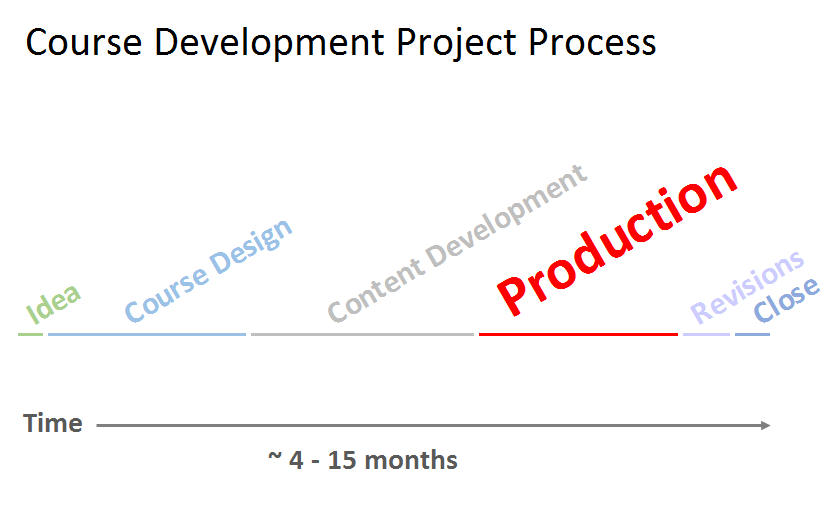
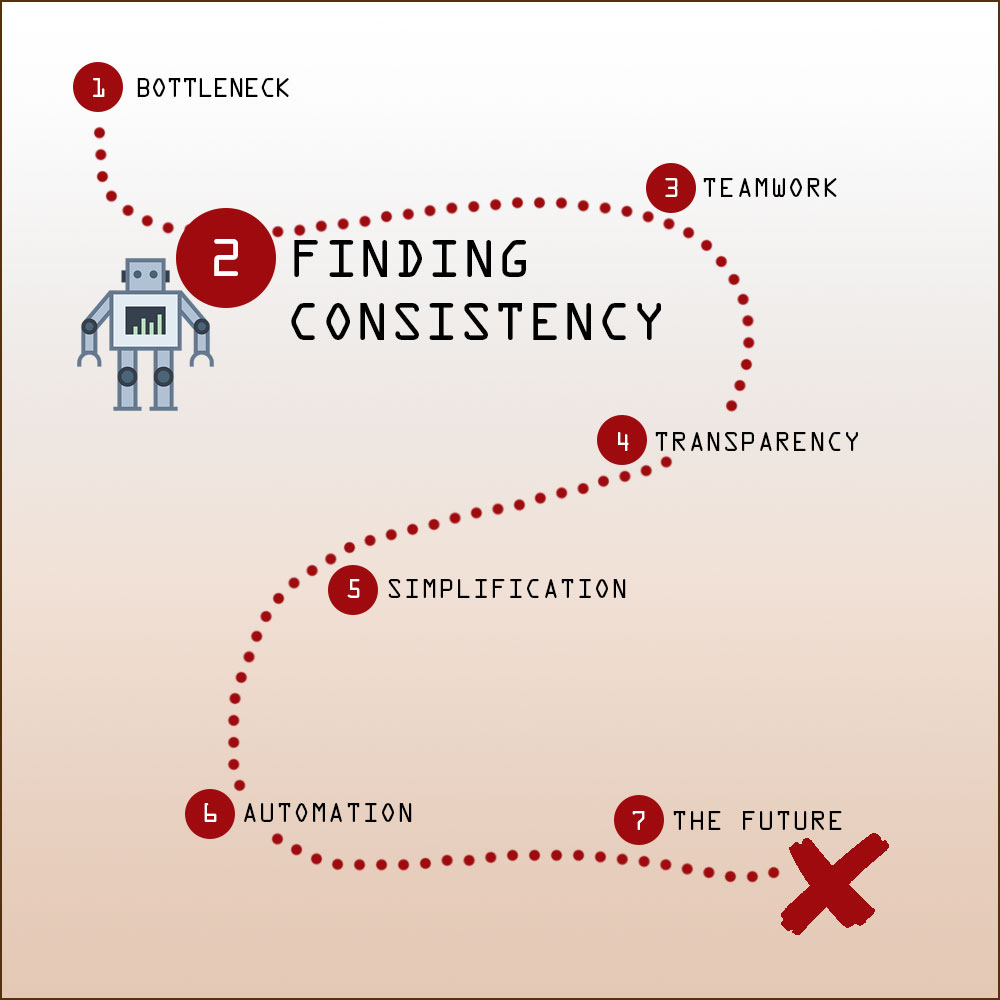
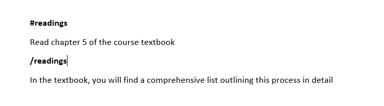
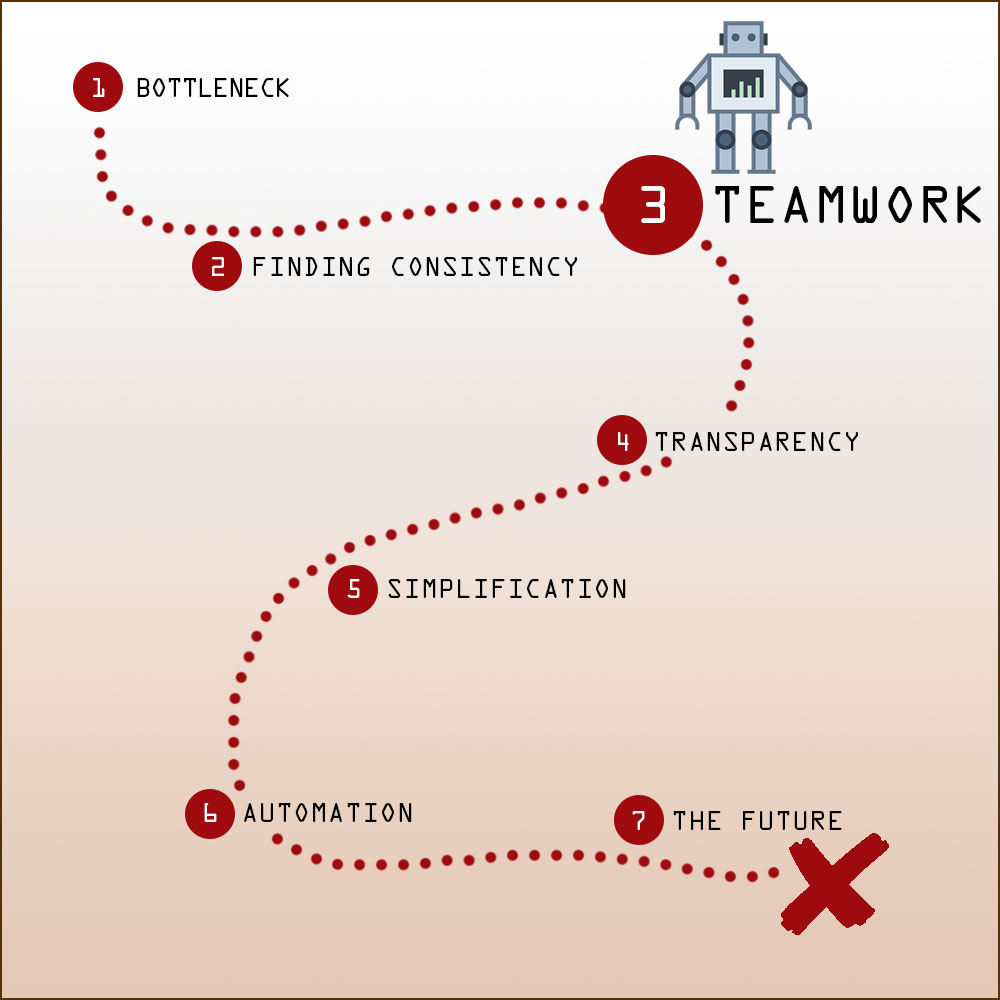
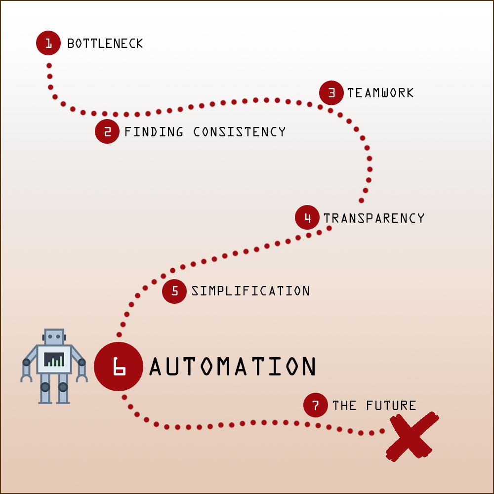
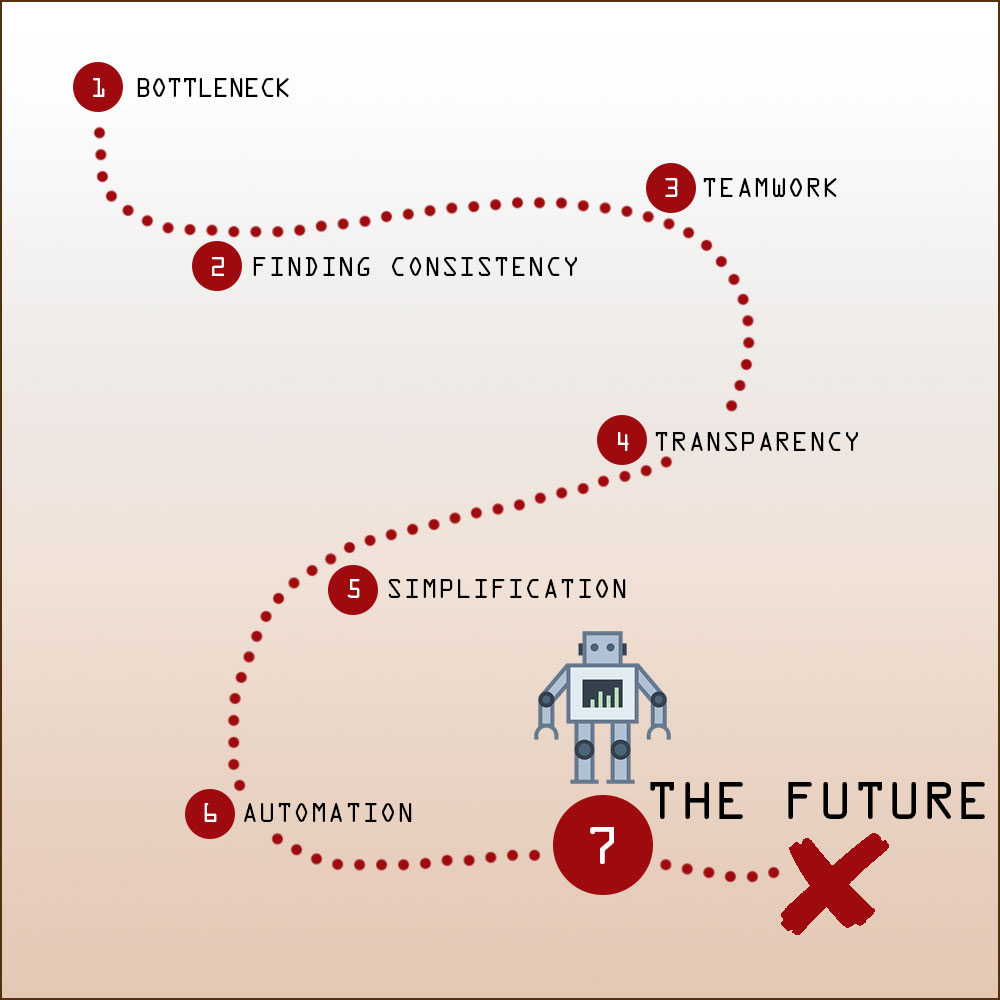
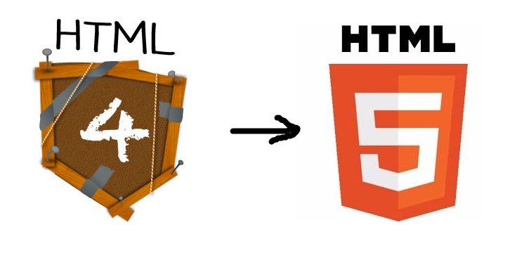

The Robots are Coming

Our Journey Towards Course Production Automation
Learning and Teaching Centre
Course Production
- Felicia Hou
- Mike Taylor
- Karl Lam
- Kyle Hunter
Background
Bottleneck

Finding Consistency
Word - Before

Word - After

Conversion Guide
Teamwork
- Central file sharing
- File versioning
- Tasks management
Transparency

Simplification


Style Guide
Automation


Sample Word Module
Conversion Guide
Recap
The Future
Importerer

Makeoverer + Restructurer
H2Wo